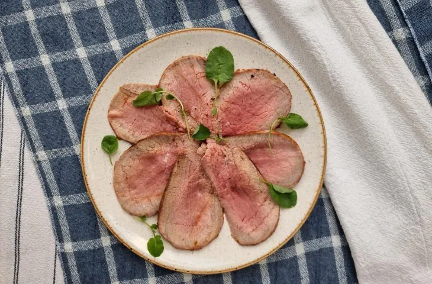

+Fit
Café da manhã
TAPIOCA
Ingredientes
- Goma de tapioca pronta a gosto
- Recheio de sua preferência (queijo, coco ralado, frango cremoso…)
Modo de preparo
- Reúna todos os ingredientes;
- Em uma frigideira, peneire e espalhe uma fina camada de goma de tapioca por toda a superfície;
- Leve ao fogo e espere esquentar;
- Dê uma leve pressionada com as costas de uma colher/espátula para certificar-se de que tudo está uniforme e grudadinho
- Cozinhe por cerca de 2 minutos ou até desgrudar da frigideira. Vire a tapioca;
- Adicione o recheio de sua preferência em metade da massa;
- Dobre a massa e deixe aquecendo por mais 30 segundos;
- Agora é só servir. Bom apetite!

CREPIOCA
Ingredientes
- 1 ovo
- 2 colheres de sopa de queijo parmesão ralado
- 2 colheres de sopa de goma de tapioca
- Sal e pimenta-do-reino a gosto
- 1 pitada de orégano
- Recheio a gosto
Modo de preparo
- Reúna todos os ingredientes;
- Em um recipiente, coloque o ovo e bata levemente;
- Adicione o queijo, a tapioca, o sal, a pimenta, o orégano e misture bem até ficar homogêneo. Esquente uma frigideira antiaderente, despeje a massinha e espalhe bem;
- Assim que firmar a massa, vire a crepioca e deixe dourar o outro lado;
- Coloque o recheio que preferir e enrole a crepioca. Agora é só servir.
PÃO DE QUEIJO FIT DE TAPIOCA
Ingredientes
- 1 xícara de chá de tapioca hidratada
- 75 g de cream cheese (ou creme de ricota light)
- 40 g de queijo minas curado (ou parmesão) ralado
- Sal a gosto
- 1 colher de sopa de linhaça (ou chia)
Modo de preparo
- Reúna todos os ingredientes;
- Coloque todos os ingredientes em uma tigela, e misture;
- Unte as mãos com um pouco de óleo, e molde bolinhas com a massa;
- Disponha as bolinhas em uma forma com papel manteiga, e asse-as em forno pré-aquecido a 200º graus por cerca de 20 a 25 minutos, ou até que os pães de queijo fiquem douradinhos;
- Agora é só servir. Bom apetite!
Almoço
STROGONOFF DE FRANGO LIGHT
Ingredientes
- 1 fio de azeite
- 1 cebola média picada em cubos
- 4 dentes de alho picados
- 1 kg de peito de frango em cubos
- Sal e pimenta-do-reino a gosto
- 1 pitada de orégano (opcional)
- 1 pitada de páprica doce
- 3 colheres de sopa de catchup zero
- 1 colher de sopa de mostarda zero
- 2 caixas de creme de leite light (200 gramas cada)
Modo de preparo
- Reúna todos os ingredientes;
- Em uma panela aquecida em fogo médio, coloque o azeite e doure a cebola e o alho;
- Adicione o frango e tempere com sal, pimenta, orégano e páprica. Misture bem;
- Tampe a panela e deixe o frango cozinhar até ficar bem dourado e a água secar por completo;
- Acrescente o tomate e deixe refogar novamente;
- Quando o frango estiver bem sequinho, adicione o catchup, a mostarda e misture bem;
- Por fim, desligue o fogo e incorpore o creme de leite, mexendo novamente;
- Está pronto! Sirva com os acompanhamentos que você mais gostar e aproveite

SALPICÃO FIT
Ingredientes do salpicão
- 4 cenouras cozinhas e cortadas em cubos
- 2 maçãs verdes em cubos
- 2 maçãs vermelhas em cubos
- Tomates-cereja a gosto cortados ao meio
- 1 kg de peito de frango cozido e desfiado
- Salsinha picada a gosto
- Lâminas de amêndoas a gosto
ingredientes da maionese de biomassa
- 1 xícara de chá de biomassa
- 1/2 limão espremido
- Azeite a gosto
- 1 dente de alho
- Salsinha a gosto
- Orégano a gosto
- Sal rosa a gosto
- Água a gosto (para dar o ponto)
Modo de preparo
- Reúna todos os ingredientes;
- Misture todos os ingredientes do salpicão em uma tigela, menos as lâminas de amêndoas;
- Coloque todos os ingredientes da maionese no liquidificador e bata;
- Ainda batendo, vá adicionando água para dar consistência;
- Assim que ganhar consistência, despeje a maionese sobre o salpicão;
- Finalize com as amêndoas laminadas;
- Agora é só servir. Bom apetite!

ROSBIFE
Ingredientes
- 1/2 peça de lagarto (1 kg e 200 gramas)
- 12 gramas de sal (2 colheres de sopa rasas)
- 3 colheres de sopa de azeite
- 2 colheres de sopa de manteiga (em pedaços)
- 1 dente de alho amassado
- Pimenta-do-reino a gosto
- Ramos de tomilho a gosto
Modo de preparo
- Reúna todos os ingredientes;
- Em um recipiente, coloque a carne, tempere apenas com o sal, passando/esfregando bem por toda a superfície da peça e leve para a geladeira por 8 a 10 horas;
- Esquente uma frigideira (de preferência de fundo grosso) e regue com o azeite;
- Adicione a carne e deixe grelhar bem. Vá virando para selar todos os lados, inclusive a base;
- Transfira a carne para uma assadeira com grade, acrescente a manteiga e o alho por cima (caso não tenha uma forma com grade, na metade do tempo de forno, vire a peça);
- Tempere com a pimenta, os ramos de tomilho por cima e leve ao forno preaquecido a 180 ºC por cerca de 30 minutos (para fornos a gás, deixe a temperatura de 190 ºC a 200 ºC);
- Retire a carne do forno e deixe descansar por 30 minutos;
- Retire o tomilho, o alho, corte a carne em fatias finas e sirva. Bom apetite!
Lanches

EMPADÃO FIT
Ingredientes
- 350 gramas de batata-doce cozida
- 200 gramas de farinha de aveia
- 1 colher de sopa e mais um fio de azeite
- 1 colher de sopa de fermento químico em pó (fermento para bolo)
- 250 gramas de frango cozido
- 2 dentes de alho
- 1/2 cebola picada
- Salsinha, cebolinha e sal a gosto
- 1/2 xícara de chá de molho de tomate
- 100 gramas de iogurte natural desnatado
Modo de preparo
- Reúna todos os ingredientes;
- Em uma frigideira, esquente um fio azeite e refogue a cebola até murchar;
- Adicione o alho e o frango. Deixe refogar mais um pouco;
- Acrescente a salsinha, a cebolinha e o sal. Misture;
- Junte o molho de tomate e misture bem;
- Finalize com o iogurte, misture até incorporar e desligue o fogo. Reserve;
- Em um recipiente, coloque a batata-doce cozida e amasse até formar um purê;
- Adicione a colher de azeite, o fermento e misture bem;
- Acrescente o sal e a farinha de aveia. Misture até formar uma massa homogênea;
- Forre o fundo e as laterais de uma assadeira média/pequena com uma parte da massa - separe a outra parte para fechar o empadão;
- Despeje o recheio de frango cremoso e espalhe bem;
- Coloque o restante da massa entre duas folhas de papel-manteiga e, com o auxílio de um rolo, abra a massa;
- Com essa massa aberta, feche o empadão da maneira que preferir e leve ao forno preaquecido a 180 ºC por cerca de 25 a 30 minutos;
- Agora é só servir. Bom apetite!

SANDUICHE NATURAL DE ATUM
Ingredientes
- 1 lata de atum escorrida (atum em água)
- 1 cenoura pequena ralada
- 2 colheres de sopa de salsinha picada
- 1 colher de café de tempero completo (ou sal e pimenta)
- 1 colher de sopa de mostarda
- 4 colheres de sopa de maionese light
- 8 fatias de pão integral de grão
- Folhas de alface a gosto
Modo de preparo
- Reúna todos os ingredientes;
- Em um recipiente, coloque todos os ingredientes (menos o pão e a alface) e misture tudo (caso queira o recheio mais cremoso, é só colocar mais maionese);
- Separe as fatias de pão, forre cada com folhas de alface e acrescente o recheio;
- Feche os sanduíches e sirva.

CROQUETE DE FRANGO FIT
Ingredientes
- 1 colher de sopa de azeite de oliva
- 1 colher de chá manteiga
- 1 colher de sopa de cebola picada
- 2 colheres de sopa de manteiga (em pedaços)
- 2 dentes de alho amassados
- 1/2 xícara de chá de frango cozido e desfiado
- 1 colher de sopa de molho de tomate
- 120ml de água
- Sal a gosto
- Cebolinha a gosto
- 50 gramas de farelo de aveia
- 1 gema + 1 colher de sopa de água
Modo de preparo
- Reúna todos os ingredientes;
- Em uma panela, esquente o azeite, derreta a manteiga e refogue a cebola e o alho;
- Adicione o frango desfiado e deixe refogar mais um pouco;
- Acrescente o molho de tomate, misture e deixe refogar;
- Coloque a água, o sal, a cebolinha e misture bem;
- Adicione o farelo de aveia e mexa rapidamente até formar uma massa e soltar do fundo da panela;
- Transfira para uma tigela, cubra com plástico filme e deixe esfriar;
- Unte as mãos com um pouco de azeite, pegue pequenas porções da massa e molde em formato de croquetes
- Passe os croquetes na mistura da gema com água, disponha-os em uma assadeira e leve ao forno preaquecido a 180 ºC por cerca de 25 a 30 minutos, ou até dourar;
- Agora é só servir!